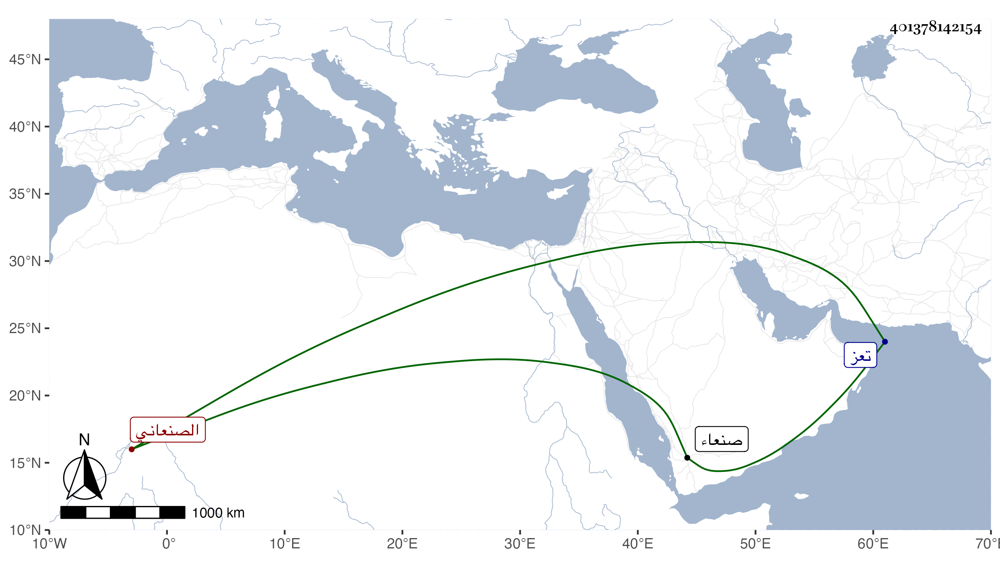

0902Sakhawi.DawLamic.ITO20230111-ara1.EIS1600.401378142154
Biography ID: 401378142154
1114
شارب بن عيسى ويسمى محمدا الصنعاني شيخها والمرجوع إليه فيها . ممن قدمه إمام صنعاء الناصر بن محمد ، فلما مات الإمام وثب عامر بن طاهر عليها فملكها وأقام فيها جماعة من أتباعه ، وأسكن محمدا ولد الناصر فيها ثم عن له اخراجه إلى تعز ليأمن على البلد منه ومن أتباع أبيه واستشعر الولد بذلك فكتب لشارب وهو في الحصون ليأخذه عنده فبادر إلى المجيء لبابها القبلي فكسره ، وأخذ الولد مظهرا أنه لا رغبة له في غير أخذه لعلمه بعجزه عنها ثم بدا له نهب بيت يحيى الكراز شيخ من أتباع عامر بل توجه فرجم قصرها فلم يكن بأسرع من خروج أتباع عامر منه عجزا وغلبة وملكها شارب واستقر بها الولد وبلغ ذلك عامرا فجاء ليستنقذها منه فخذل ، وكان ذلك سبب قتله ودفن هناك وأرسل أخوه علي يسأل في نقله إلى المعرانة فما أذعنوا لذلك محتجين بأنا نتبرك بقبره وكأنه للاستهزاء ، ويقال إنه نقل ، وشارب الآن سنة سبع وتسعين في قيد الحياة على شياخته وهو من عوام الزيدية .
